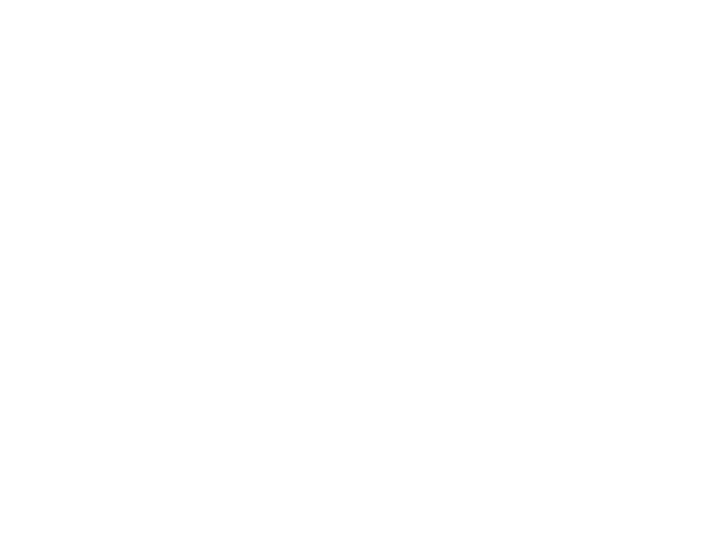

Przyprawy
Gałka muszkatołowa
Gałka muszkatołowa: 6 g białka, 525 kcal, 49 g węglowodanów i 36 g tłuszczu na 100 g. Kategoria: Przyprawy.
Kalorie525 kcalna 100 g
Białko / proteiny6 g
Węglowodany49 g
Tłuszcz36 g
Cena (szac.)~58,00 złza 100 g
Ceny zaktualizowano: maj 2026 (szacunek — ceny w popularnych supermarketach)
Porcja: szczypta (0.5 g)
| Kalorie | 3 kcal |
|---|---|
| Białko | 0 g |
| Węglowodany | 0.2 g |
| Tłuszcz | 0.2 g |
| Cena (szac.) | ~0,29 zł |
Szczegółowe składniki odżywcze na 100 g
| Wartość energetyczna (kalorie) | 525 kcal |
|---|---|
| Białko (proteiny) | 6 g |
| Węglowodany | 49 g |
| Tłuszcz | 36 g |
| Tłuszcze nasycone | 25 g |
| Tłuszcze nienasycone | 11 g |
| Witaminy i minerały | Mangan, Sód, Żelazo |
| Współczynnik kcal / 1 g białka | 87.5 |
| Cena produktu (szac. za 100 g) | ~58,00 zł |
| Cena za 100 g białka (szac.) | ~966,67 zł |